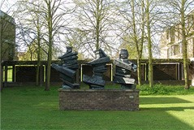
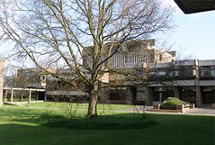
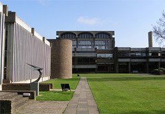
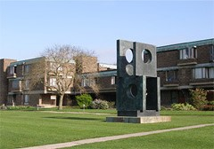

Churchill College is the national and Commonwealth memorial to Sir Winston Spencer Churchill (1874-1965), best known for his courageous leadership as British Prime Minister during World War II. He was a formidable political thinker, soldier, historian, bricklayer, painter and orator, and he won the Nobel Prize for literature in 1953.

Churchill College is one of the thirty-one colleges of the University of Cambridge, and is set in grounds of some forty acres on one of the largest sites of any Cambridge college. Its open layout, with playing fields extending beyond the courts and lawns of the College, is modern and spacious.
As the first major work of modern architecture in the University, it has been judged “an outstanding conception,” “the best of the new” by one noted architectural critic. Modern though the design is, it remains faithful to the traditional collegiate idea with interlinked courts and staircases on which students’ and Fellows’ rooms intermingle.
The College was created as an international multidisciplinary community for the study of the sciences and the humanities in order to meet the national need for scientists and technologists, and to forge links with industry. According to Churchill’s vision, the College was created with a bias towards science, and it admits a higher proportion of scientists and technologists than most other colleges, but its arts subjects flourish.
Like the other colleges, Churchill is self-governing and provides residential, social and welfare facilities. It is also responsible for the small group tutorials (known as “supervisions”) characteristic of Cambridge teaching.
The University (comprising central administration, academic departments and Colleges) is responsible for faculties and departments, the large central libraries (which complement the College Library), the provision of lectures and student examinations (including the awarding of degrees).